import os
import pickle
import warnings
from glob import glob
import numpy as np
import pandas as pd
from astropy import units as u
from astropy.convolution import convolve, Gaussian2DKernel
from astropy.io import fits
from astropy.nddata import CCDData
from astropy.visualization import (
AsymmetricPercentileInterval,
AsinhStretch,
LinearStretch,
ImageNormalize,
)
from matplotlib import pyplot as plt
from matplotlib import patheffects as pe
from matplotlib.lines import Line2D
from matplotlib.collections import LineCollection
from matplotlib.patches import Ellipse
from matplotlib.ticker import ScalarFormatter
from scipy.stats import median_abs_deviation, bootstrap
from sklearn.preprocessing import LabelEncoder
from nicl.euclid.constants import MER
from nicl.euclid.data_access import default_data_path
from nicl.euclid.utilities import get_invalid_mask
from nicl.filter import sampled_median_filter
from nicl.utilities import get_pixel_scale
from nicl.euclid.skypatch_noise import sb_limit_q1Creation of figures for the Q1 data processing paper
plt.style.use("nicl.euclid.v1nicl")
plt.rcParams["font.size"] = 9 # this is a better match to the text in the paperimage_cmap = plt.cm.inferno
image_cmap.set_bad("darkgrey", alpha=1)
fw, fh = plt.rcParams["figure.figsize"]General
Most figures include the cluster MCXCJ1754.6+6803. It turns out this cluster is in observation 2683, which is the observation we have already been using for many of the figures. The only dither in which the cluster is mostly on one detector is dither 3 (the final one in the observation), on DET32.
Ideally we might use this detector for the single-chip processing figures, but DET32 is not very interesting in terms of background structure. Perhaps we are best sticking with the examples we have?
def no_ticks(ax):
ax.set_xticks([])
ax.set_yticks([])
def show_image(
image_data, # 2D array of the image data to display
image_wcs=None, # WCS object associated with the image
vmin=None,
vmax=None,
intervalpc=(10, 95),
interpolate_nans=True,
interpolation=None,
stretch="asinh",
axes=False,
ax=None,
):
"""Display an image and optionally outlines a region around a given RA, Dec."""
interval = AsymmetricPercentileInterval(*intervalpc)
if stretch == "asinh":
stretch = AsinhStretch()
elif stretch == "linear":
stretch = LinearStretch()
else:
raise ValueError(f"Unknown stretch: {stretch}")
norm = ImageNormalize(
image_data, vmin=vmin, vmax=vmax, interval=interval, stretch=stretch
)
if interpolate_nans:
sigma = 1
for i in range(10):
masked = np.isnan(image_data)
if not masked.any():
break
image_data = image_data.copy()
kernel = Gaussian2DKernel(1)
with warnings.catch_warnings():
warnings.simplefilter("ignore")
convolved = convolve(image_data, kernel)
image_data[masked] = convolved[masked]
sigma *= 2
if ax is None:
if image_wcs is not None:
fig, ax = plt.subplots(subplot_kw={"projection": image_wcs})
else:
fig, ax = plt.subplots()
ax.imshow(
image_data,
norm=norm,
origin="lower",
cmap=image_cmap,
interpolation=interpolation,
interpolation_stage="data",
)
try:
lon, lat = ax.coords
except AttributeError:
lon = lat = None
if axes:
if lon is not None:
lon.set_axislabel("RA")
lat.set_axislabel("Dec")
else:
ax.set_xlabel("RA")
ax.set_ylabel("Dec")
else:
if lon is not None:
lon.set_ticks_visible(False)
lon.set_ticklabel_visible(False)
lat.set_ticks_visible(False)
lat.set_ticklabel_visible(False)
lon.set_axislabel("")
lat.set_axislabel("")
else:
no_ticks(ax)
return norm.vmin, norm.vmax
def add_scalebar(
ax,
length,
wcs,
xpos,
ypos,
ypad=0.02,
text_top=None,
text_bottom=None,
text_color="black",
outline_color="white",
):
pix_scale = get_pixel_scale(wcs=wcs)
length = (length / pix_scale).to_value(u.dimensionless_unscaled)
xlim = ax.get_xlim()
ylim = ax.get_ylim()
x = xlim[0] + xpos * (xlim[1] - xlim[0])
y = ylim[0] + ypos * (ylim[1] - ylim[0])
ypad = ypad * (ylim[1] - ylim[0])
fontsize = ax.xaxis.label.get_size()
if outline_color is None:
outline = None
else:
outline = [pe.withStroke(linewidth=4, foreground=outline_color), pe.Normal()]
ax.text(
x + length / 2,
y + ypad,
text_top,
ha="center",
va="bottom",
color=text_color,
path_effects=outline,
zorder=4,
fontsize=fontsize,
)
ax.text(
x + length / 2,
y - 1.5 * ypad,
text_bottom,
ha="center",
va="top",
color=text_color,
path_effects=outline,
zorder=4,
fontsize=fontsize,
)
ax.plot(
[x, x + length],
[y, y],
color=text_color,
lw=2,
path_effects=outline,
zorder=5,
)
def plot_zoom_box(ax, zoom_limits):
ax.plot(
[
zoom_limits[0][0],
zoom_limits[0][1],
zoom_limits[0][1],
zoom_limits[0][0],
zoom_limits[0][0],
],
[
zoom_limits[1][0],
zoom_limits[1][0],
zoom_limits[1][1],
zoom_limits[1][1],
zoom_limits[1][0],
],
"w-",
lw=1,
)tartan_zoom_limits = ((1300, 1500), (1700, 1900))
persistence_zoom_limits = ((885, 1186), (1605, 1906))Figure 1
A comparison of our ICL-focussed data processing (left) versus a stack of the CAL frames with no post-processing (centre) and the standard MER product (right). All images show a region centred on the cluster MCXC~J1754.6+6803.
cluster_path = default_data_path("Q1_R1_processed_illustrations/ablation/cluster")
fn = cluster_path / "standard/EUC_NIR_W-STK_H-MCXCJ1754.6+6803.fits"
cluster_h_full = CCDData.read(fn, unit=u.dimensionless_unscaled)
fn = cluster_path / "no_processing/EUC_NIR_W-STK_H-MCXCJ1754.6+6803.fits"
cluster_h_no_processing = CCDData.read(fn, unit=u.dimensionless_unscaled)
fn = cluster_path / "mer/EUC_MER-MOSAIC-NIR-H_MCXCJ1754.6+6803.fits"
cluster_h_mer = CCDData.read(fn, unit=u.dimensionless_unscaled)
fn = cluster_path / "standard/EUC_VIS_SWL-STK-MCXCJ1754.6+6803.fits"
cluster_vis_full = CCDData.read(fn, unit=u.dimensionless_unscaled)
fn = cluster_path / "no_processing/EUC_VIS_SWL-STK-MCXCJ1754.6+6803.fits"
cluster_vis_no_processing = CCDData.read(fn, unit=u.dimensionless_unscaled)
fn = cluster_path / "mer/EUC_MER-MOSAIC-VIS_MCXCJ1754.6+6803.fits"
cluster_vis_mer = CCDData.read(fn, unit=u.dimensionless_unscaled)2026-02-06 14:03:12 - astropy.fits_ccddata_reader - INFO - first HDU with data is extension 1.
2026-02-06 14:03:12 - astropy.fits_ccddata_reader - INFO - first HDU with data is extension 1.
2026-02-06 14:03:12 - astropy.fits_ccddata_reader - INFO - first HDU with data is extension 1.
2026-02-06 14:03:12 - astropy.fits_ccddata_reader - INFO - first HDU with data is extension 1.INFO: first HDU with data is extension 1. [astropy.nddata.ccddata]
INFO: first HDU with data is extension 1. [astropy.nddata.ccddata]
INFO: first HDU with data is extension 1. [astropy.nddata.ccddata]
INFO: first HDU with data is extension 1. [astropy.nddata.ccddata]ok = cluster_h_full.data.ravel() > 2
mer_factor_h = np.nanmedian((cluster_h_mer.data / cluster_h_full.data).ravel()[ok])
ok = cluster_vis_full.data.ravel() > 2
mer_factor_vis = np.nanmedian(
(cluster_vis_mer.data / cluster_vis_full.data).ravel()[ok]
)
print(mer_factor_h, mer_factor_vis)231.91338 1.8219974def add_colorbar(
mappable, ax, band=None, sb_ticks=[-26, -27, 100, 27, 26, 25, 24], **kwargs
):
sb_ticks_abs = np.abs(sb_ticks)
sb_ticks_sign = np.sign(sb_ticks)
adu_ticks = sb_ticks_sign * 10 ** (
-0.4 * (sb_ticks_abs - 2.5 * np.log10(0.3**2) - 23.9)
)
sb_tick_labels = []
for sb in sb_ticks:
if sb > 50:
sb_tick_labels.append(r"$\infty$")
elif sb < 0:
sb_tick_labels.append(f"({-sb})")
else:
sb_tick_labels.append(f"{sb}")
cbar = plt.colorbar(mappable, ax=ax, **kwargs)
cbar.ax.set_yticks(adu_ticks)
cbar.ax.set_yticklabels(sb_tick_labels)
ylabel = "mag arcsec$^{-2}$"
if band is not None:
ylabel = f"{band} {ylabel}"
cbar.set_label(ylabel, labelpad=-1)
show_cluster_image = show_image
fig, axarr = plt.subplots(2, 3, figsize=(2 * fw, 2 * fw), layout="compressed")
vmin_h, vmax_h = show_cluster_image(cluster_h_full.data, ax=axarr[0, 0])
show_cluster_image(
cluster_h_no_processing.data, ax=axarr[0, 1], vmin=vmin_h, vmax=vmax_h
)
show_cluster_image(
cluster_h_mer.data,
ax=axarr[0, 2],
vmin=vmin_h * mer_factor_h,
vmax=vmax_h * mer_factor_h,
)
vmin_vis, vmax_vis = show_cluster_image(cluster_vis_full.data, ax=axarr[1, 0])
show_cluster_image(
cluster_vis_no_processing.data, ax=axarr[1, 1], vmin=vmin_vis, vmax=vmax_vis
)
show_cluster_image(
cluster_vis_mer.data,
ax=axarr[1, 2],
vmin=vmin_vis * mer_factor_vis,
vmax=vmax_vis * mer_factor_vis,
)
add_scalebar(
axarr[1, 2],
length=1.3 * u.arcmin,
wcs=cluster_vis_full.wcs,
xpos=0.75,
ypos=0.15,
ypad=0.02,
text_top="$1.3'$",
text_bottom="100 kpc",
)
add_colorbar(
axarr[0, 0].images[0],
axarr[0],
band=r"$H_\mathrm{E}$",
sb_ticks=[-26, 100, 26, 25, 24],
pad=0.02,
shrink=0.75,
extend="both",
)
add_colorbar(
axarr[1, 0].images[0],
axarr[1],
band=r"$I_\mathrm{E}$",
sb_ticks=[-28, 100, 28, 27, 26, 25],
pad=0.02,
shrink=0.75,
extend="both",
)
outline = [pe.withStroke(linewidth=4, foreground="white"), pe.Normal()]
fig.text(
0.03,
0.78,
r"$H_\mathrm{E}$",
ha="center",
va="bottom",
color="black",
path_effects=outline,
fontsize="large",
)
fig.text(
0.03,
0.45,
r"$I_\mathrm{E}$",
ha="center",
va="bottom",
color="black",
path_effects=outline,
fontsize="large",
)
axarr[0, 0].set_xlabel("our post-processing", labelpad=5)
axarr[0, 1].set_xlabel("combined CAL frames", labelpad=5)
axarr[0, 2].set_xlabel("MER with background model", labelpad=5)
plt.savefig("fig1.pdf")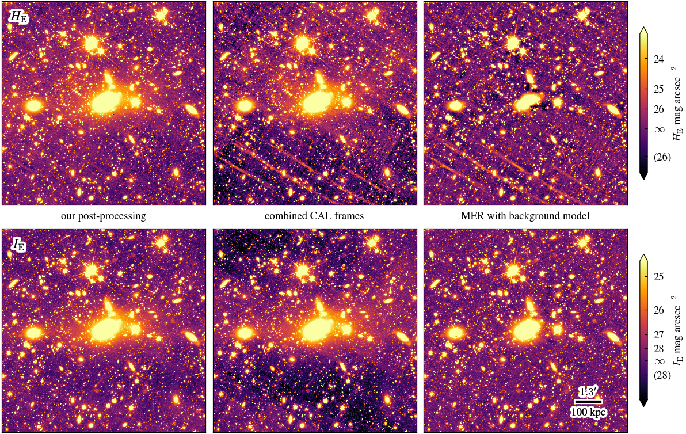
Figure 2
An example of the NISP (HE-band) atemporal background.
This is created in ../nbs/euclid/skyflat.ipynb. Keep using the same figure. To be run again to get the latest version.
Figure 3
An example of the VIS atemporal background.
This is created in ../nbs/euclid/skyflat.ipynb. Keep using the same figure. To be run again to get the latest version.
Figure 4
A single 2040 \(\times\) 2040 pixel detector from a NISP CAL frame (a) fully-processed, (b) without the atemporal background correction, (c) without the tartan correction, and (d) without the persistence correction.
These are created from the different processing variants. The original code to create the individual panels is in ../nbs/euclid/ec_tenerife_talk.ipynb.
processed_path = default_data_path("Q1_R1_processed_illustrations/ablation/")
extension = "DET11.SCI"
fn = (
processed_path
/ "persistence/NIR/2683/EUC_NIR_W-CAL-IMAGE_H-2683-3_20240930T184607.529026Z.fits"
)
image_full = CCDData.read(fn, unit=u.dimensionless_unscaled, extension=extension)
mask = get_invalid_mask(fn, extension)
image_full.data[mask] = np.nan
fn = (
processed_path
/ "persistence_no_skyflat/NIR/2683/EUC_NIR_W-CAL-IMAGE_H-2683-3_20240930T184607.529026Z.fits"
)
image_no_skyflat = CCDData.read(fn, unit=u.dimensionless_unscaled, extension=extension)
mask = get_invalid_mask(fn, extension)
image_no_skyflat.data[mask] = np.nan
fn = (
processed_path
/ "persistence_no_tartan/NIR/2683/EUC_NIR_W-CAL-IMAGE_H-2683-3_20240930T184607.529026Z.fits"
)
image_no_tartan = CCDData.read(fn, unit=u.dimensionless_unscaled, extension=extension)
mask = get_invalid_mask(fn, extension)
image_no_tartan.data[mask] = np.nan
fn = (
processed_path
/ "no_persistence/NIR/2683/EUC_NIR_W-CAL-IMAGE_H-2683-3_20240930T184607.529026Z.fits"
)
image_no_persistence = CCDData.read(
fn, unit=u.dimensionless_unscaled, extension=extension
)
mask = get_invalid_mask(fn, extension)
image_no_persistence.data[mask] = np.nan2026-02-06 14:03:19 - astropy.fits_ccddata_reader - INFO - first HDU with data is extension 1.
2026-02-06 14:03:19 - astropy.fits_ccddata_reader - INFO - using the unit passed to the FITS reader instead of the unit ELECTRON in the FITS file.
2026-02-06 14:03:20 - astropy.fits_ccddata_reader - INFO - first HDU with data is extension 1.
2026-02-06 14:03:20 - astropy.fits_ccddata_reader - INFO - using the unit passed to the FITS reader instead of the unit ELECTRON in the FITS file.INFO: first HDU with data is extension 1. [astropy.nddata.ccddata]
INFO: using the unit passed to the FITS reader instead of the unit ELECTRON in the FITS file. [astropy.nddata.ccddata]
INFO: first HDU with data is extension 1. [astropy.nddata.ccddata]
INFO: using the unit passed to the FITS reader instead of the unit ELECTRON in the FITS file. [astropy.nddata.ccddata]2026-02-06 14:03:20 - astropy.fits_ccddata_reader - INFO - first HDU with data is extension 1.
2026-02-06 14:03:20 - astropy.fits_ccddata_reader - INFO - using the unit passed to the FITS reader instead of the unit ELECTRON in the FITS file.
2026-02-06 14:03:20 - astropy.fits_ccddata_reader - INFO - first HDU with data is extension 1.
2026-02-06 14:03:20 - astropy.fits_ccddata_reader - INFO - using the unit passed to the FITS reader instead of the unit ELECTRON in the FITS file.INFO: first HDU with data is extension 1. [astropy.nddata.ccddata]
INFO: using the unit passed to the FITS reader instead of the unit ELECTRON in the FITS file. [astropy.nddata.ccddata]
INFO: first HDU with data is extension 1. [astropy.nddata.ccddata]
INFO: using the unit passed to the FITS reader instead of the unit ELECTRON in the FITS file. [astropy.nddata.ccddata]no_skyflat_background = np.nanmedian(image_no_skyflat.data) - np.nanmedian(
image_full.data
)
no_skyflat_background62.951424image_full.shape(2040, 2040)def show_detector_image(img, ax, vmin=None, vmax=None, panel=None, **kwargs):
new_kwargs = dict(stretch="linear", interpolate_nans=True)
new_kwargs.update(kwargs)
show_image(img, ax=ax, vmin=vmin, vmax=vmax, **new_kwargs)
if panel is not None:
ax.text(
0.05,
0.95,
f"({panel})",
ha="center",
va="center",
transform=ax.transAxes,
color="black",
fontsize="large",
path_effects=[pe.withStroke(linewidth=4, foreground="white"), pe.Normal()],
)
fig, axarr = plt.subplots(2, 2, figsize=(2 * fw, 2 * fw), layout="compressed")
vmin, vmax = -5, 15
show_detector_image(image_full.data, ax=axarr[0, 0], vmin=vmin, vmax=vmax, panel="a")
show_detector_image(
image_no_skyflat.data,
ax=axarr[0, 1],
vmin=no_skyflat_background + vmin,
vmax=no_skyflat_background + vmax,
panel="b",
)
show_detector_image(
image_no_tartan.data, ax=axarr[1, 0], vmin=vmin, vmax=vmax, panel="c"
)
show_detector_image(
image_no_persistence.data, ax=axarr[1, 1], vmin=vmin, vmax=vmax, panel="d"
)
cbar = plt.colorbar(axarr[0, 0].images[0], ax=axarr, shrink=0.375, pad=0.02)
cbar.set_label("electron counts")
plot_zoom_box(axarr[1, 0], tartan_zoom_limits)
plot_zoom_box(axarr[1, 1], persistence_zoom_limits)
plt.savefig("fig4.pdf")
axarr = fig.get_axes()
fig4pos0 = axarr[0].get_position()
fig4pos1 = axarr[1].get_position()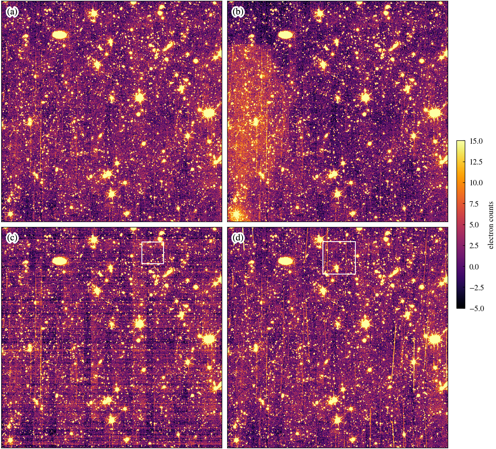
Figure 5
The background level of a NISP detector image, averaged over (left) rows and (right) columns for two exposures (dithers 2 and 3) within observation 2683. Band of alternating column levels is apparent, in addition to other small-scale variations in both the columns and rows. Although some features appear to persist for a while, they typically vary between exposures. The bottom row (dither 3) corresponds to the exposure shown in Figs. 4 and 6. The vertical dashed lines here indicate the region outlined in white in those figures.
These are created in ../nbs/euclid/debanding.ipynb.
Figure 6
The tartan correction for same single detector shown in Fig. 4 and as plotted in Fig. 5. The left panel shows the entire chip, while the right panel shows a zoom-in of the region outlined in white. The same region is indicated in Fig 4. and Fig. 5. Note the band of alternating column background levels.
This is created from the debug output of the persistence correction. The original code to create this figure is in ../nbs/euclid/ec_tenerife_talk.ipynb.
fig4pos1.x0 += 0.075
fig4pos1.x1 += 0.075debug_path = default_data_path("Q1_R1_processed_illustrations/persistence/NIR")
fn = debug_path / "2683/debanding_2683_3_1_H.fits"
debanding_correction = CCDData.read(fn, unit=u.dimensionless_unscaled)
fig, axarr = plt.subplots(1, 2, figsize=(2 * fw, 2 * fw), layout="compressed")
axarr = axarr.flatten()
vmin, vmax = -5, 15
axarr[0].imshow(
debanding_correction.data, origin="lower", cmap="inferno", vmin=vmin, vmax=vmax
)
plot_zoom_box(axarr[0], tartan_zoom_limits)
axarr[1].imshow(
debanding_correction.data[
tartan_zoom_limits[1][0] : tartan_zoom_limits[1][1],
tartan_zoom_limits[0][0] : tartan_zoom_limits[0][1],
],
vmin=vmin,
vmax=vmax,
origin="lower",
cmap="inferno",
extent=(
tartan_zoom_limits[0][0] - 0.5,
tartan_zoom_limits[0][1] + 0.5,
tartan_zoom_limits[1][0] - 0.5,
tartan_zoom_limits[1][1] + 0.5,
),
)
# no_ticks(axarr[0])
# no_ticks(axarr[1])
axarr[0].set_xlabel("$x$ / pixels")
axarr[0].set_ylabel("$y$ / pixels")
axarr[1].set_xlabel("$x$ / pixels")
axarr[1].set_ylabel("$y$ / pixels")
axarr[0].set_position(fig4pos0)
axarr[1].set_position(fig4pos1)
plt.savefig("fig6.pdf")2026-02-06 14:03:22 - astropy.fits_ccddata_reader - INFO - first HDU with data is extension 1.
2026-02-06 14:03:22 - astropy.fits_ccddata_reader - INFO - using the unit passed to the FITS reader instead of the unit ELECTRON in the FITS file.INFO: first HDU with data is extension 1. [astropy.nddata.ccddata]
INFO: using the unit passed to the FITS reader instead of the unit ELECTRON in the FITS file. [astropy.nddata.ccddata]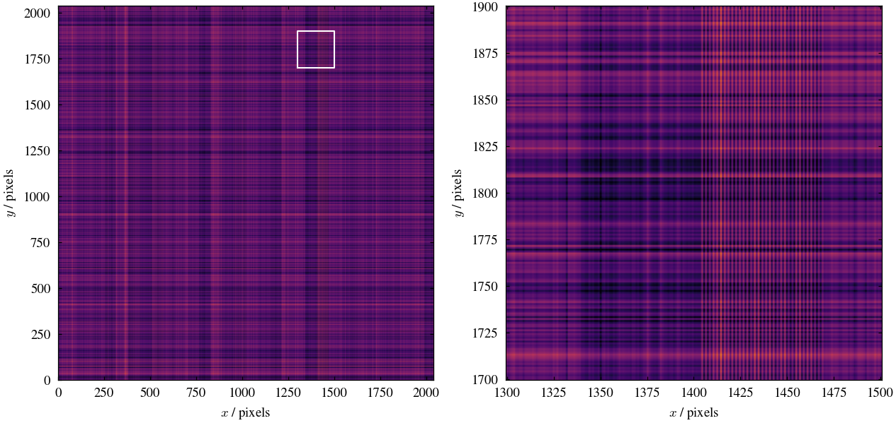
Figure 7
A cutout of a small region of a NISP detector image, indicated in Fig. 4, illustrating the persistence correction. The columns display each successive dither within one observation; the left-most panel corresponds to Fig. 4. The rows show the image prior to (first row) and after (second row) persistence correction, the correction itself (third row), and its uncertainty (fourth row).
This is created from the debug output of the persistence correction. The code to create elements of this figure is in ../nbs/euclid/persistence.ipynb.
def plot_zoom_dither(ax, i, img, vmin, vmax, cmap, interpolation):
aximg = ax[i].imshow(
img[
persistence_zoom_limits[1][0] : persistence_zoom_limits[1][1],
persistence_zoom_limits[0][0] : persistence_zoom_limits[0][1],
],
vmin=vmin,
vmax=vmax,
origin="lower",
cmap=cmap,
interpolation=interpolation,
interpolation_stage="data",
)
no_ticks(ax[i])
return aximg
def plot_dithers(
ax,
infn,
label,
detector="11",
obs_id=2683,
vmin=50,
vmax=100,
cmap="inferno",
interpolation=None,
sir_rot=False,
):
ext = f"DET{detector}.SCI"
data_path = debug_path / f"{obs_id}"
for i, dither in enumerate([0, 3]):
fn = os.path.join(data_path, infn.format(obs_id=obs_id, i=dither))
fn = glob(fn)[0]
img = fits.getdata(fn, extname=ext)
print(f"median level: {np.nanmedian(img)}")
if sir_rot:
direction = -1 if ext[3] in ("1", "2") else 1
img = np.rot90(img, direction)
plot_zoom_dither(
ax, i, img, vmin=vmin, vmax=vmax, cmap=cmap, interpolation=interpolation
)
ax[-1].set_xlabel(label)fig, ax = plt.subplots(2, 4, figsize=(2 * fw, fw), layout="compressed")
plot_dithers(
ax[:, 0],
"img_masked_{obs_id}_{i}_1_H.fits",
r"original image, $\mathrm{e}^-$",
vmin=55.5,
vmax=88,
)
plot_dithers(
ax[:, 1],
"corrimg_masked_{obs_id}_{i}_1_H.fits",
r"corrected image, $\mathrm{e}^-$",
vmin=-7.5,
vmax=25,
)
plot_dithers(
ax[:, 2],
"corr_{obs_id}_{i}_1_H.fits",
r"persistence, $\mathrm{e}^-$",
vmin=-7.5,
vmax=25,
)
plot_dithers(
ax[:, 3],
"corr_err_{obs_id}_{i}_1_H.fits",
r"persistence error, $\mathrm{e}^-$",
vmin=-7.5,
vmax=25,
)
ax[0, 0].set_ylabel("dither 0")
ax[1, 0].set_ylabel("dither 3")
cbar = plt.colorbar(ax[1, 1].images[0], ax=ax, shrink=0.75, pad=0.02)
cbar.set_label("electron counts", labelpad=0)
plt.savefig("fig7.pdf")median level: 64.26501083374023
median level: 65.5897445678711
median level: 1.0985966920852661
median level: 2.4509395360946655
median level: 0.0
median level: 0.0
median level: 0.0
median level: 0.0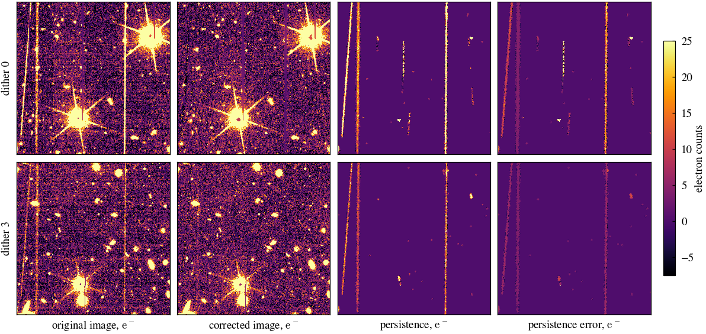
Figure 8
A demonstration that our post-processing steps preserve faint, extended LSB flux. A simple mock BCG + ICL profile (left) was created and added into the individual CAL frames of observation 3591 at nine positions across the field of view. The full post-processing pipeline was then run to produce an image of the cluster (middle). The right panel shows the radial flux profile measured in the mock image (dashed line) using elliptical annuli. The solid line shows the average profile measured in the processed images, using the same annuli, and the shaded region indicated the RMS scatter between the nine versions of the cluster. This confirms that the post-processing steps do not significantly alter the profile of the BCG + ICL source.
mock_data_path = default_data_path("Q1_R1_mock_clusters_v1.0/standard/")
mock_meas_path = default_data_path("Q1_R1_mock_clusters_v1.0_measurements/standard/")
test_data_path = default_data_path("test_images/")
test_meas_path = default_data_path("test_measure/")
skypatch_meas_path = default_data_path("Q1_R1_clusters_v1.0_measurements/skypatch/")def compare_mock_images():
fig, ax = plt.subplots(2, 2, figsize=(2 * fw, 2 * fw), layout="compressed")
ax = ax.flatten()
for i in range(4):
fn = mock_data_path / f"EUC_NIR_W-STK_H-mock_cluster_{i + 1}.fits"
processed_mock_img = CCDData.read(fn, unit=u.dimensionless_unscaled, hdu=1)
show_cluster_image(processed_mock_img.data, ax=ax[i], vmin=vmin_h, vmax=vmax_h)# compare_mock_images()def add_contours(ax, img, sb=[25, 26, 27, 28, 29], label=False, **kwargs):
sb_contours = np.sort(np.asarray(sb))[::-1]
sb_maggies = 10 ** ((23.9 - sb_contours) / 2.5) * 0.3**2
cs = ax.contour(
img.data,
levels=sb_maggies,
colors="white",
linewidths=0.5,
origin="lower",
**kwargs,
)
if label:
cs_fmt = {k: f"{v}" for k, v in zip(sb_maggies, sb_contours)}
ax.clabel(cs, fontsize="small", fmt=cs_fmt)
def add_scale_rings(ax, radius=200, **kwargs):
xlim = ax.get_xlim()
ylim = ax.get_ylim()
dx = (xlim[1] - xlim[0]) / 2
dy = (ylim[1] - ylim[0]) / 2
cx = xlim[0] + dx
cy = ylim[0] + dy
r_max = min(dx, dy)
r = radius
while r < r_max:
circle = plt.Circle((cx, cy), r, ec="k", fill=False, lw=1, ls="--", **kwargs)
ax.add_patch(circle)
r += radius
def add_profile_ellipses(ax, profile_filename, min_r=None, max_r=None):
profile = pd.read_csv(profile_filename, skiprows=1)
if min_r is not None:
profile = profile[profile["R"] > min_r]
if max_r is not None:
profile = profile[profile["R"] < max_r]
xlim = ax.get_xlim()
ylim = ax.get_ylim()
dx = (xlim[1] - xlim[0]) / 2
dy = (ylim[1] - ylim[0]) / 2
x = xlim[0] + dx
y = ylim[0] + dy
pixelscale = 0.3
profile["R"] = profile["R"] / pixelscale # Convert arcsec to pixels
rad = profile["R"].values
ellip = profile["ellip"].values
pa = profile["pa"].values
selected_annuli = sorted(set(rad))
for i in range(len(selected_annuli) - 1):
r_outer = selected_annuli[i + 1]
e = ellip[i]
theta = np.deg2rad(pa[i])
ellipse = Ellipse(
(x, y),
width=2 * r_outer,
height=2 * r_outer * (1 - e),
angle=np.rad2deg(theta - np.pi / 2),
edgecolor="white",
facecolor="none",
lw=0.5,
)
ax.add_patch(ellipse)
def make_fig8(
variation=None,
filter="H",
cluster_id=1,
measurement_suffix="",
plot_sky_noise=True,
plot_test_noise=False,
label_panels=False,
):
if variation is None:
variation_label = "standard"
else:
variation_label = variation
# mock_data_path = default_data_path(f"Q1_R1_mock_clusters_v1.0/{variation_label}/")
mock_meas_path = default_data_path(
f"Q1_R1_mock_clusters_v1.0_measurements{measurement_suffix}/{variation_label}/"
)
test_data_path = default_data_path("test_images/")
test_meas_path = default_data_path("test_measure/")
fn = (
test_meas_path
/ f"basic_test/cluster/cluster-nomask-iso_no_noise_{filter}-phot_no_noise_{filter}_merged.prof"
)
with open(fn, "rb") as f:
f.readline()
test_meas = pd.read_csv(f)
fn = (
test_meas_path
/ f"basic_test/cluster/cluster-mask_YJH-iso_{filter}-phot_{filter}_merged.prof"
)
with open(fn, "rb") as f:
f.readline()
test_noise_meas = pd.read_csv(f)
mock_meas = []
for i in range(4):
j = i + 1
fn_profile = (
mock_meas_path
/ f"mock_cluster_{j}/mock_cluster_{j}-mask_YJH-iso_{filter}-phot_{filter}_merged.prof"
)
with open(fn_profile, "rb") as f:
f.readline()
tab = pd.read_csv(f)
tab["version"] = j
mock_meas.append(tab)
mock_meas = pd.concat(mock_meas)
if plot_sky_noise:
# noise = pd.read_csv(skypatch_meas_path / f"EDFS/EDFS_Skypatch_bs1800_H_noise_measurements.csv")
# r_noise = noise["SMA_annulus_centre_arcsec"]
# sel = r_noise > 1
# r_noise = r_noise[sel]
# flux_noise = 3 * noise[noise_col][sel]
# sb_noise = -2.5 * np.log10(flux_noise) + 23.9
r_noise = np.geomspace(1, 1000, 1000)
sb_noise = sb_limit_q1(r_noise, 1800, filter, "EDFS")
# fn = mock_data_path / f"EUC_NIR_W-STK_{filter}-mock_cluster_{cluster_id}.fits"
# processed_mock_img = CCDData.read(fn, unit=u.dimensionless_unscaled, hdu=1)
fn = (
mock_meas_path
/ f"mock_cluster_{cluster_id}/tmp/sb_profile/EUC_NIR_W-STK_{filter}-mock_cluster_{cluster_id}_bkgsub.fits"
)
processed_mock_img = CCDData.read(fn, unit=u.dimensionless_unscaled)
fn = test_data_path / f"basic_test/cluster_{filter}_no_noise.fits"
original_mock_img = CCDData.read(fn, unit=u.dimensionless_unscaled, hdu=1)
processed_mock_img = processed_mock_img[1500:-1500, 1500:-1500]
processed_mock_img_smoothed = processed_mock_img.copy()
processed_mock_img_smoothed.data = sampled_median_filter(
processed_mock_img.data, size=200
)
original_mock_img = original_mock_img[1500:-1500, 1500:-1500]
# original_mock_img_smoothed = original_mock_img.copy()
# original_mock_img_smoothed.data = sampled_median_filter(original_mock_img.data, size=200)
fig, ax = plt.subplots(1, 3, figsize=(2 * fw, fw), layout="compressed")
show_cluster_image(original_mock_img.data, ax=ax[0], vmin=vmin_h, vmax=vmax_h)
add_contours(ax[0], original_mock_img, label=True)
# add_contours(ax[0], original_mock_img_smoothed, label=True)
add_scale_rings(ax[0])
show_cluster_image(processed_mock_img.data, ax=ax[1], vmin=vmin_h, vmax=vmax_h)
add_contours(ax[1], processed_mock_img_smoothed)
add_scale_rings(ax[1])
# add_profile_ellipses(ax[1], fn_profile, 20, 800)
add_scalebar(
ax[0],
length=1 * u.arcmin,
wcs=processed_mock_img.wcs,
xpos=0.85,
ypos=0.1,
ypad=0.02,
text_top="$1'$",
text_bottom=f"{60 / 0.3:.0f} pix",
)
add_colorbar(
ax[1].images[0],
ax[:2],
band=r"$H_\mathrm{E}$",
sb_ticks=[-26, 100, 26, 25, 24],
pad=0.04,
shrink=0.75,
extend="both",
)
ax2 = ax[2].inset_axes([0.08, 0.1, 0.9, 0.85])
ax[2].set_axis_off()
for i in range(4):
j = i + 1
r = mock_meas["SMA_annulus_centre"]
# r = mock_meas["R"]
flux = mock_meas["Median_flux_annulus"]
# flux = mock_meas["I"]
sel = mock_meas["version"] == j
sel &= r > 1
sel &= flux > 0
r = r[sel]
flux = flux[sel]
sb = -2.5 * np.log10(flux) + 23.9
ax2.plot(r, sb, ls="-", label=f"mock cluster {j}")
if plot_test_noise:
r = test_noise_meas["SMA_annulus_centre"]
flux = test_noise_meas["Median_flux_annulus"]
sel = r > 1
sel &= flux > 0
r = r[sel]
flux = flux[sel]
sb = -2.5 * np.log10(flux) + 23.9
ax2.plot(r, sb, color="black", ls="-.-")
r = test_meas["SMA_annulus_centre"]
flux = test_meas["Median_flux_annulus"]
sel = r > 1
sel &= flux > 0
r = r[sel]
flux = flux[sel]
sb = -2.5 * np.log10(flux) + 23.9
ax2.plot(r, sb, ls=":", lw=2, color="black")
if plot_sky_noise:
ax2.plot(r_noise, sb_noise, color="black", ls="--")
ax2.set_xscale("log")
ax2.set_ylim(30, 18)
ax2.set_xlabel("semi-major axis / arcsec")
# ax2.legend()
if variation is not None:
ax[0].set_ylabel(variation_label)
if label_panels:
for panel, dx in zip(("a", "b", "c"), (0.025, 0.33, 0.68)):
fig.text(
dx,
0.77,
f"({panel})",
ha="center",
va="center",
color="black",
fontsize="large",
path_effects=[
pe.withStroke(linewidth=4, foreground="white"),
pe.Normal(),
],
)# This version only subtracts a single background value from the whole image
make_fig8(measurement_suffix="_largebkg")2026-02-06 14:03:25 - astropy.fits_ccddata_reader - INFO - using the unit passed to the FITS reader instead of the unit adu in the FITS file.INFO: using the unit passed to the FITS reader instead of the unit adu in the FITS file. [astropy.nddata.ccddata]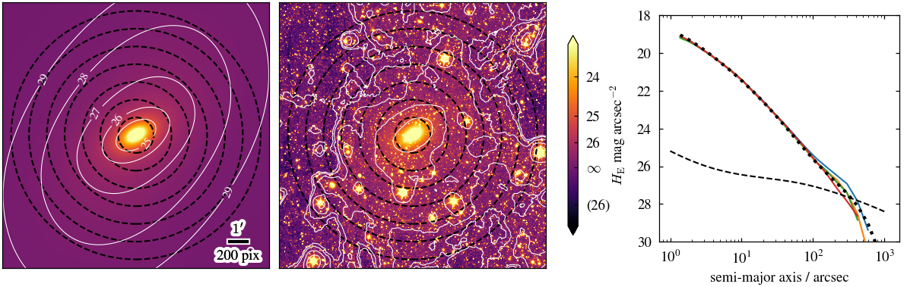
make_fig8(label_panels=True)
plt.savefig("fig8.pdf")2026-02-06 14:03:28 - astropy.fits_ccddata_reader - INFO - using the unit passed to the FITS reader instead of the unit adu in the FITS file.INFO: using the unit passed to the FITS reader instead of the unit adu in the FITS file. [astropy.nddata.ccddata]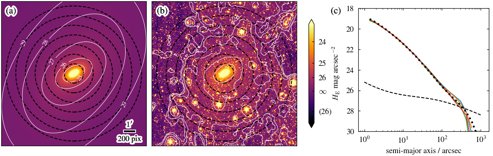
for variation in [
"standard",
"no_tartan",
"no_persistence",
"no_skyflat",
"no_bkg_match",
"no_processing",
]:
make_fig8(variation)2026-02-06 14:03:32 - astropy.fits_ccddata_reader - INFO - using the unit passed to the FITS reader instead of the unit adu in the FITS file.INFO: using the unit passed to the FITS reader instead of the unit adu in the FITS file. [astropy.nddata.ccddata]2026-02-06 14:03:34 - astropy.fits_ccddata_reader - INFO - using the unit passed to the FITS reader instead of the unit adu in the FITS file.INFO: using the unit passed to the FITS reader instead of the unit adu in the FITS file. [astropy.nddata.ccddata]2026-02-06 14:03:37 - astropy.fits_ccddata_reader - INFO - using the unit passed to the FITS reader instead of the unit adu in the FITS file.INFO: using the unit passed to the FITS reader instead of the unit adu in the FITS file. [astropy.nddata.ccddata]2026-02-06 14:03:40 - astropy.fits_ccddata_reader - INFO - using the unit passed to the FITS reader instead of the unit adu in the FITS file.INFO: using the unit passed to the FITS reader instead of the unit adu in the FITS file. [astropy.nddata.ccddata]2026-02-06 14:03:43 - astropy.fits_ccddata_reader - INFO - using the unit passed to the FITS reader instead of the unit adu in the FITS file.INFO: using the unit passed to the FITS reader instead of the unit adu in the FITS file. [astropy.nddata.ccddata]2026-02-06 14:03:46 - astropy.fits_ccddata_reader - INFO - using the unit passed to the FITS reader instead of the unit adu in the FITS file.INFO: using the unit passed to the FITS reader instead of the unit adu in the FITS file. [astropy.nddata.ccddata]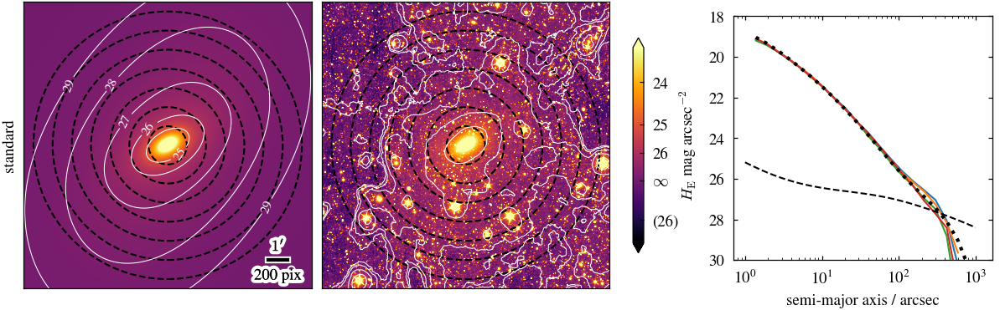
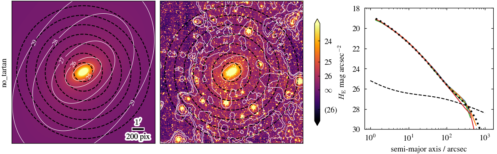
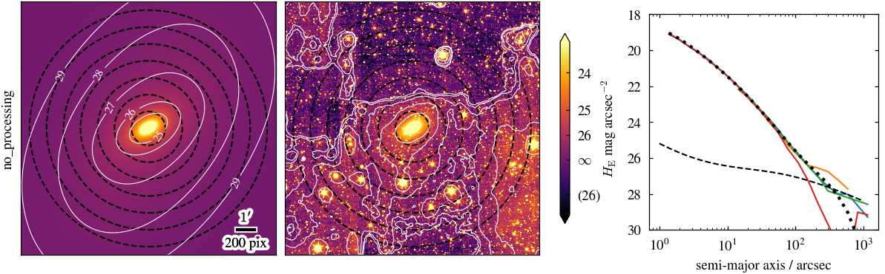
Figure 9
The uncertainty on a surface brightness measurement in a square aperture, as a function of the square root of the number of unmasked pixels in the aperture, for images created with different processing. The uncertainty is estimated from the standard deviation of the flux measured in many apertures random placed on an image with all sources thoroughly masked (as described in Sec. 3.1). It therefore reflects variations in the background level on the scale of the aperture, as well as from averaging the noise on the individual pixels. In the absence of any background variations, the measured scatter would simply decline as the square-root of the number of pixels in the aperture, as indicated by the dotted line. Deviations from this slope reveal the presence of background variations on that scale. The uncertainty is given in terms of a surface brightness limit; this is the surface brightness of a source, in an aperture of a given size, that would be detectable with a 3-sigma confidence. Simply combining the CAL frames (dashed line), results in a flattening for scales above X arcsec and a surface brightness limit of X mag/arcsec^2. The images produced by the standard MER pipeline (dotted line) show an improvement, TBD. However, this behaviour has been achieved by an aggressive background subtraction, which has subtracted off the flux on these spatial scales, see Fig. 1. In contrast, our post-processing pipeline (solid line), acheives similar performance to MER in this metric, without removing any flux from extended sources (see Fig. 9).
def get_noise_info_recalc(
field,
boxsize,
band,
r_min=1,
n_sigma=3,
n_bootstrap=100,
zero_background=False,
tutku=False,
no_filter=False,
variant="standard",
central_deg=None,
zp=23.9,
):
if tutku:
skypatch_meas_path = default_data_path(
"Q1_R1_clusters_v1.0_measurements/tutku_skypatch/"
)
meas = pd.read_csv(
skypatch_meas_path
/ f"{field}_Skypatch_bs{boxsize}/{field}_Skypatch_bs{boxsize}_{band}_noise_stats_extended_datatable.csv"
)
else:
if no_filter:
skypatch_meas_path = default_data_path(
"Q1_R1_clusters_v1.0_measurements/skypatch_filter_size_1/"
)
else:
skypatch_meas_path = default_data_path(
"Q1_R1_clusters_v1.0_measurements/skypatch/"
)
if variant is None or tutku or no_filter:
meas = pd.read_csv(
skypatch_meas_path
/ f"{field}/{field}_Skypatch_bs{boxsize}_{band}_noise_stats_extended_datatable.csv"
)
else:
meas = pd.read_csv(
skypatch_meas_path
/ f"{field}/{variant}/{field}_Skypatch_bs{boxsize}_{band}_noise_stats_extended_datatable.csv"
)
if central_deg is not None:
position = pd.DataFrame(
meas.Centre_pixel.apply(lambda x: eval(x)).to_list(), columns=["x", "y"]
)
centre = position.mean()
position = position - centre
position["r_pixels"] = np.sqrt(position.x**2 + position.y**2)
position["r_deg"] = position["r_pixels"] * 0.3 / 3600
meas = meas[position["r_deg"] < central_deg]
mad_group = meas.groupby("SMA_annulus_centre_arcsec")
if zero_background:
def zero(x, *args, **kwargs):
return 0
def mad(x):
return median_abs_deviation(
x, scale="normal", nan_policy="omit", center=zero
)
else:
def mad(x):
return median_abs_deviation(x, scale="normal", nan_policy="omit")
radii = sorted(mad_group.groups.keys())
noise_info = dict(
r=[],
n_ok=[],
n_pix=[],
mean=[],
noise=[],
noise_err=[],
noise_low=[],
noise_high=[],
)
for r in radii:
df = mad_group.get_group(r)
flux = df["Clipped_median_flux_annulus"].to_numpy()
flux = flux[~np.isnan(flux)]
flux = flux * n_sigma
noise_info["r"].append(r)
noise_info["n_ok"].append(len(flux))
noise_info["n_pix"].append(df["Total_valid_pix_annulus"].to_numpy().mean())
noise_info["mean"].append(flux.mean())
noise_info["noise"].append(mad(flux))
res = bootstrap([flux], mad, n_resamples=n_bootstrap)
noise_info["noise_err"].append(res.standard_error)
noise_info["noise_low"].append(res.confidence_interval[0])
noise_info["noise_high"].append(res.confidence_interval[1])
noise_info = pd.DataFrame(noise_info)
noise_info["sb"] = -2.5 * np.log10(noise_info["noise"]) + zp
noise_info["sb_low"] = -2.5 * np.log10(noise_info["noise_low"]) + zp
noise_info["sb_high"] = -2.5 * np.log10(noise_info["noise_high"]) + zp
noise_info["sb_err_low"] = noise_info["sb_low"] - noise_info["sb"]
noise_info["sb_err_high"] = noise_info["sb"] - noise_info["sb_high"]
sel = noise_info["r"] >= r_min
noise_info = noise_info.loc[sel]
return noise_infodef get_noise_info(
field,
boxsize,
band,
r_min=1,
n_sigma=3,
tutku=False,
no_filter=False,
variant="standard",
boxes=False,
zp=23.9,
):
fn = f"{field}_Skypatch_bs{boxsize}_{band}_noise_measurements.csv"
if boxes:
fn = fn.replace(".csv", "_boxes.csv")
if tutku:
skypatch_meas_path = default_data_path(
"Q1_R1_clusters_v1.0_measurements/tutku_skypatch/"
)
noise_measurements = pd.read_csv(
skypatch_meas_path / f"{field}_Skypatch_bs{boxsize}/{fn}"
)
else:
if no_filter:
skypatch_meas_path = default_data_path(
"Q1_R1_clusters_v1.0_measurements/skypatch_filter_size_1/"
)
else:
skypatch_meas_path = default_data_path(
"Q1_R1_clusters_v1.0_measurements/skypatch/"
)
if variant is None or tutku or no_filter:
noise_measurements = pd.read_csv(skypatch_meas_path / f"{field}/{fn}")
else:
noise_measurements = pd.read_csv(
skypatch_meas_path / f"{field}/{variant}/{fn}"
)
noise_info = dict(r=[], noise=[])
if boxes:
noise_info["r"] = noise_measurements["Box_halfside_arcsec"]
noise_info["size"] = 2 * noise_info["r"]
size_pix = noise_info["size"] / 0.3
noise_info["area_pix"] = size_pix**2
else:
noise_info["r"] = noise_measurements["SMA_annulus_centre_arcsec"]
r_pix = noise_info["r"] / 0.3
noise_info["area_pix"] = np.pi * r_pix**2
noise_info["sqrt_area_pix"] = np.sqrt(noise_info["area_pix"])
# if tutku:
# noise_info["r"] = noise_info["r"] / 0.3
noise_info["noise"] = noise_measurements["MAD_Median_Clipped_Flux"] * n_sigma
if "Median_Valid_Pixels" in noise_measurements.columns:
noise_info["npix"] = noise_measurements["Median_Valid_Pixels"]
noise_info["sqrt_npix"] = np.sqrt(noise_info["npix"])
noise_info = pd.DataFrame(noise_info)
noise_info["sb"] = -2.5 * np.log10(noise_info["noise"]) + zp
sel = noise_info["r"] >= r_min
noise_info = noise_info.loc[sel]
# Hack for testing consistency with old results (before the switch to elliptical annuli)
# noise_info["r"] = noise_info["r"] / np.sqrt(2)
return noise_infodef plot_fig9(
field="EDFS",
n_sigma=3,
boxsize=1800,
x_col="sqrt_npix",
boxes=True,
mer_equiv=True,
):
fw, fh = plt.rcParams["figure.figsize"]
fig, axarr = plt.subplots(
2, 2, figsize=(2 * fw, 2 * fh), sharex=True, layout="compressed"
)
bands = ["VIS", "Y", "J", "H"]
variants = ["no_processing", "standard", "mer"]
variant_labels = ["no proc.", "our proc.", "MER"]
mer_zp = MER.mer_zeropoint
pixel_scale = 0.3
mer_equiv_boxsize = 85
r_min = 0 # np.log10() # as missing single pixel from earlier noise measurements
linestyles = ["-.", "-", "--"]
linewidths = [1, 2, 1]
for band_idx, band in enumerate(bands):
ax = axarr.flat[band_idx]
for variant_idx, variant in enumerate(variants):
zp = mer_zp[band] if variant == "mer" else 23.9
noise_info = get_noise_info(
field,
boxsize,
band,
n_sigma=n_sigma,
variant=variant,
zp=zp,
boxes=boxes,
r_min=r_min,
)
r = noise_info[x_col]
sb = noise_info["sb"]
if variant == "standard":
ideal_sb0 = sb[0]
# the following applies the expected shift to match MER's bilinear interpolation
# ideal_sb0 -= 2.5 * np.log10(2 / 3)
sel = r < boxsize
r = r[sel]
sb = sb[sel]
sb_10x10 = np.interp(np.log10(10 / pixel_scale), np.log10(r), sb)
print(f"{band} {variant} sb limit for 10x10 arcsec: {sb_10x10:.1f}")
style = linestyles[variant_idx]
lw = linewidths[variant_idx]
if variant == "mer_trans":
r_smooth = np.linspace(r.min(), r.max(), 1000)
sb_smooth = np.interp(r_smooth, r, sb)
points = np.vstack((r_smooth, sb_smooth)).T.reshape(-1, 1, 2)
segments = np.hstack((points[:-1], points[1:]))
alphas = np.geomspace(1, 0.1, len(r_smooth)) ** 2
lc = LineCollection(segments, array=alphas, cmap="Greys")
ax.add_collection(lc)
else:
ax.plot(r, sb, style, color="k", zorder=5, lw=lw)
if mer_equiv:
noise_info = get_noise_info(
field,
mer_equiv_boxsize,
band,
n_sigma=n_sigma,
variant=variant,
zp=zp,
boxes=boxes,
r_min=r_min,
)
r = noise_info[x_col]
sb = noise_info["sb"]
# sel = r < mer_equiv_boxsize * 2
ax.plot(r[sel], sb[sel], style, color="r")
if "sqrt" in x_col:
r_expected = np.array([1, r.max()])
# sb0 = 26.25 if band == "VIS" else 25
sb_expected = ideal_sb0 + 2.5 * np.log10(r_expected)
sb_10x10_expected = np.interp(
np.log10(10 / pixel_scale), np.log10(r_expected), sb_expected
)
print(f"{band} ideal sb limit for 10x10 arcsec: {sb_10x10_expected:.1f}")
ax.plot(r_expected, sb_expected, color="b", linestyle=":")
if band_idx > 1:
if x_col == "sqrt_npix":
ax.set_xlabel("sqrt(number of pixels)")
elif x_col == "sqrt_area_pix":
ax.set_xlabel("sqrt(number of aperture pixels)")
elif x_col == "r":
if boxes:
ax.set_xlabel("box half-size / arcsec")
else:
ax.set_xlabel("semi-major axis / arcsec")
band_symbol = "I" if band == "VIS" else band
band_symbol = f"{band_symbol}_{{\\rm E}}"
ax.set_ylabel(
f"{n_sigma}$\\sigma$ surface brightness limit / mag arcsec$^{{-2}}$"
)
ax.text(
0.85,
0.9,
f"${band_symbol}$",
transform=ax.transAxes,
ha="center",
va="center",
size="x-large",
)
if band == "VIS":
# ax.set_ylim(29.25, 25.25)
ax.set_ylim(30.0, 25.25)
else:
# ax.set_ylim(28.0, 24.0)
ax.set_ylim(28.75, 24.0)
ax.tick_params(axis="x", which="both", top=False)
ax.set_xscale("log")
ax.set_xlim(0.8, 1899)
ax.xaxis.set_major_formatter(ScalarFormatter())
ax.yaxis.set_major_locator(plt.MaxNLocator(6, integer=True))
ax.grid(which="major", linestyle="-", linewidth=0.5, color="lightgrey")
if boxes:
def pix2arcsec(x):
return x * pixel_scale
def arcsec2pix(x_arcsec):
return x_arcsec / pixel_scale
secax = ax.secondary_xaxis(
"top",
functions=(pix2arcsec, arcsec2pix),
)
secax.set_xlim(ax.get_xlim())
secax.xaxis.set_major_formatter(ScalarFormatter())
if band_idx < 2:
secax.set_xlabel("aperture side length / arcsec")
else:
secax.tick_params(labeltop=False)
ax = axarr.flat[0]
variant_lines = [
Line2D([0], [0], color="k", linestyle=linestyles[i], lw=linewidths[i])
for i, v in enumerate(variants)
]
variant_lines.insert(3, Line2D([0], [0], color="b", linestyle=":"))
variant_labels.insert(3, "ideal")
variant_legend = ax.legend(
variant_lines,
variant_labels,
loc=(0.02, 0.21),
borderpad=0.3,
labelspacing=0.4,
framealpha=1,
)
ax.add_artist(variant_legend)
if mer_equiv:
variant_bkgsub_lines = [
Line2D([0], [0], color="r", linestyle=linestyles[0]),
Line2D([0], [0], color="r", linestyle=linestyles[1]),
Line2D([0], [0], color="r", linestyle=linestyles[2]),
]
variant_bkgsub_labels = [
"",
"with $26''$\nbkg. sub.",
"",
]
variant_bkgsub_legend = ax.legend(
variant_bkgsub_lines,
variant_bkgsub_labels,
loc=(0.02, 0.02),
borderpad=0.29,
labelspacing=-0.5,
framealpha=1,
)
ax.add_artist(variant_bkgsub_legend)
# variant_legend = ax.legend(variant_lines[4:], variant_labels[4:], loc=(0.45, 0.02), edgecolor="none", borderpad=0.4, labelspacing=0.5)
# ax.add_artist(variant_legend)
fig.get_layout_engine().set(wspace=0.05)
fig.savefig("fig9.pdf")plot_fig9(mer_equiv=True)VIS no_processing sb limit for 10x10 arcsec: 26.4
VIS standard sb limit for 10x10 arcsec: 27.8
VIS mer sb limit for 10x10 arcsec: 28.3
VIS ideal sb limit for 10x10 arcsec: 29.5
Y no_processing sb limit for 10x10 arcsec: 25.5
Y standard sb limit for 10x10 arcsec: 26.4
Y mer sb limit for 10x10 arcsec: 26.6
Y ideal sb limit for 10x10 arcsec: 28.0
J no_processing sb limit for 10x10 arcsec: 25.4
J standard sb limit for 10x10 arcsec: 26.4
J mer sb limit for 10x10 arcsec: 26.7
J ideal sb limit for 10x10 arcsec: 28.2
H no_processing sb limit for 10x10 arcsec: 25.5
H standard sb limit for 10x10 arcsec: 26.3
H mer sb limit for 10x10 arcsec: 26.7
H ideal sb limit for 10x10 arcsec: 28.2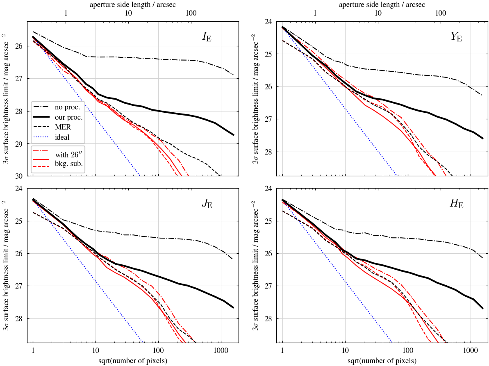
Figure 10
The uncertainty on a surface brightness measurement in an annular aperture, as a function of the size of the annulus, for images created with different processing. The uncertainty is estimated from the standard deviation of the flux measured in many apertures random placed on an image with all sources thoroughly masked (as described in Sec. 3.1). It therefore reflects variations in the background level on the scale of the aperture, as well as from averaging the noise on the individual pixels. In the absence of any background variations, the measured scatter would simply decline as the square-root of the number of pixels in the aperture, as indicated by the dotted line. Deviations from this slope reveal the presence of background variations on that scale. The uncertainty is given in terms of a surface brightness limit; this is the surface brightness of a source, in a annulus of a given size, that would be detectable with a 3-sigma confidence. Simply combining the CAL frames (dashed line), results in a flattening for scales above X arcsec and a surface brightness limit of X mag/arcsec^2. The images produced by the standard MER pipeline (dotted line) show an improvement, TBD. However, this behaviour has been achieved by an aggressive background subtraction, which has subtracted off the flux on these spatial scales, see Fig. 1. In contrast, our post-processing pipeline (solid line), acheives similar performance to MER in this metric, without removing any flux from extended sources (see Fig. 8).
def fit_noise_info(n_sigma=3, variant="standard"):
fields = ["EDFS", "EDFF", "EDFN"]
bands = ["VIS", "Y", "J", "H", "YJH"]
boxsizes = [450, 500, 550, 650, 750, 1000, 1800, 2350]
boxsizes += [300, 850, 1250, 1500, 2000, 2750]
dfs = []
for band in bands:
for boxsize in boxsizes:
for field in fields:
noise_info = get_noise_info(
field, boxsize, band, n_sigma=n_sigma, variant=variant
)
r = noise_info["r"]
sel = r < boxsize
r = r[sel]
sb = noise_info["sb"][sel]
df = pd.DataFrame({"r": r, "sb": sb})
df["boxsize"] = boxsize
df["band"] = band
df["field"] = field
dfs.append(df)
df = pd.concat(dfs)
return df
def export_noise_info_for_fitting(n_sigma=3, variant="standard"):
df = fit_noise_info(n_sigma=n_sigma, variant=variant)
band_encoder = LabelEncoder()
field_encoder = LabelEncoder()
df["band_category"] = band_encoder.fit_transform(df["band"]) + 1
df["field_category"] = field_encoder.fit_transform(df["field"]) + 1
df["log_r"] = np.log10(df["r"])
X = df[["log_r", "boxsize", "band_category", "field_category"]].to_numpy()
y = df["sb"].to_numpy()
pickle.dump((X, y), open("Xy.pkl", "wb"))
return band_encoder, field_encoder
def read_and_plot_noise_fit(pickle_file, band_encoder, field_encoder):
X, y = pickle.load(open("Xy.pkl", "rb"))
yp = pickle.load(open(pickle_file, "rb"))
fig, ax = plt.subplots(
4, 3, figsize=(10, 10), sharex=True, sharey=True, layout="compressed"
)
boxsizes = np.unique(X[:, 1])
band_categories = np.unique(X[:, 2])
field_categories = np.unique(X[:, 3])
r = 10 ** X[:, 0]
cmap = plt.get_cmap("viridis_r")
colors = [cmap(i / (len(boxsizes) - 1)) for i in range(len(boxsizes))]
for i, boxsize in enumerate(boxsizes):
sel_boxsize = X[:, 1] == boxsize
color = colors[i % len(colors)]
for j, band_category in enumerate(band_categories):
sel_band_category = X[:, 2] == band_category
for k, field_category in enumerate(field_categories):
sel_field_category = X[:, 3] == field_category
sel = sel_boxsize & sel_band_category & sel_field_category
ax[j, k].plot(
r[sel],
y[sel],
"x",
color=color,
label=f"boxsize={boxsize}" if i == 0 else "",
)
ax[j, k].plot(r[sel], yp[sel], color=color, ls=":")
ax[j, k].set_title(
f"{band_encoder.classes_[j]} {field_encoder.classes_[k]}"
)
ax[0, 0].set_ylim(30.5, 25)
ax[0, 0].set_xscale("log")
def sb_limit_q1_fit(params, df, bands, fields):
band_param1 = params[:5]
band_param2 = params[5:10]
band_param3 = params[10:15]
field_param1 = params[15:18]
field_param2 = params[18:21]
field_param3 = params[21:24]
res = []
for bc, band in enumerate(bands):
for fc, field in enumerate(fields):
df_sel = df[(df["band"] == band) & (df["field"] == field)]
sb = df_sel["sb"]
r = df_sel["r"]
boxsize = df_sel["boxsize"]
b1 = band_param1[bc]
b2 = band_param2[bc]
b3 = band_param3[bc]
f1 = field_param1[fc]
f2 = field_param2[fc]
f3 = field_param3[fc]
sb_fit = sb_limit_q1(r, boxsize, params=[b1, b2, b3, f1, f2, f3])
res.append(sb - sb_fit)
return np.concatenate(res)Fitting the noise curves
First run be, fe = export_noise_info_for_fitting() to produce a pickle file of the data. Then, in a separate IPython interpreter, run the following code, to perform the symbolic regression.
from pysr import PySRRegressor, TemplateExpressionSpec
import pickle
X, y = pickle.load(open("Xy.pkl", "rb"))
template = TemplateExpressionSpec(
expressions=["f"],
variable_names=["r", "boxsize", "band_category", "field_category"],
parameters={"band_param1": 5, "band_param2": 5, "band_param3": 5, "field_param1": 3, "field_param2": 3, "field_param3": 3},
combine="f(r, boxsize, band_param1[band_category], band_param2[band_category], band_param3[band_category], field_param1[field_category], field_param2[field_category], field_param3[field_category])"
)
model = PySRRegressor(
expression_spec=template,
binary_operators=["+", "*", "-", "/", "^"],
constraints={"^": (-1, 5)},
parsimony=0.001,
warm_start=True,
niterations=10000,
maxsize=60,
verbosity=0,
population_size=50,
populations=30,
complexity_of_constants=2
)
model.fit(X, y)
yp = model.predict(X)
pickle.dump(yp, open("yp.pkl", "wb"))The resulting predictions of the model can be plotted using read_and_plot_noise_fit("yp.pkl", be, fe).
The best fit is hardcoded in skypatch_noise.sb_limit_q1, for use below and by others.
The Y, J, H curves are very similar. Quantify this to show that Y and J are everywhere within 0.1 mag of H, then only show I, H and YJH.
r = 1.4 ** np.arange(25) * 0.3
r = r[r > 1]
boxsizes = [450, 500, 550, 650, 750, 1000, 1800, 2350]
fields = ["EDFS", "EDFF", "EDFN"]
y_sb = []
j_sb = []
h_sb = []
yjh_sb = []
i_sb = []
for field in fields:
for boxsize in boxsizes:
i = sb_limit_q1(r, boxsize, "VIS", field)
yjh = sb_limit_q1(r, boxsize, "YJH", field)
y = sb_limit_q1(r, boxsize, "Y", field)
j = sb_limit_q1(r, boxsize, "J", field)
h = sb_limit_q1(r, boxsize, "H", field)
y_sb.append(y)
j_sb.append(j)
h_sb.append(h)
yjh_sb.append(yjh)
i_sb.append(i)
y_sb = np.array(y_sb)
j_sb = np.array(j_sb)
h_sb = np.array(h_sb)
yjh_sb = np.array(yjh_sb)
i_sb = np.array(i_sb)
yh_std = np.std(y_sb - h_sb)
yh_max = np.max(np.abs(y_sb - h_sb))
jh_std = np.std(j_sb - h_sb)
jh_max = np.max(np.abs(j_sb - h_sb))
yjh_std = np.std(yjh_sb - h_sb)
yjh_max = np.max(np.abs(yjh_sb - h_sb))
i_std = np.std(i_sb - h_sb)
i_max = np.max(np.abs(i_sb - h_sb))
print("band std max")
print(f"Y {yh_std:.2f} {yh_max:.2f}")
print(f"J {jh_std:.2f} {jh_max:.2f}")
print(f"H {yjh_std:.2f} {yjh_max:.2f}")
print(f"I {i_std:.2f} {i_max:.2f}")band std max
Y 0.01 0.05
J 0.01 0.11
H 0.08 0.47
I 0.20 1.67def plot_fig10(
field1="EDFS",
field2="EDFF",
field3="EDFN",
n_sigma=3,
tutku=False,
no_filter=False,
variant="standard",
central_deg=None,
plot_fit=True,
include_YJH=False,
):
if central_deg is not None:
def get_noise(*args, **kwargs):
return get_noise_info_recalc(*args, **kwargs, central_deg=central_deg)
else:
get_noise = get_noise_info
bands = ["VIS", "H", "YJH"]
fw, fh = plt.rcParams["figure.figsize"]
fig, axarr = plt.subplots(
3, 1, figsize=(1 * fw, 3 * fh), sharex=True, layout="compressed"
)
# boxsizes = [450, 500, 550, 650, 750, 1000, 1800, 2350]
boxsizes = [450, 750, 1800]
pixel_scale = 0.3
cmap = plt.get_cmap("viridis_r")
colors = [cmap(0.07 + 0.9 * i / (len(boxsizes) - 1)) for i in range(len(boxsizes))]
markers = ["o", "^", "s"]
linestyles = ["-", "--", ":"]
for band_idx, band in enumerate(bands):
ax = axarr.flat[band_idx]
for boxsize_idx, boxsize in enumerate(boxsizes):
boxsize_arcsec = int(round(boxsize * pixel_scale))
noise_info = get_noise(
field1,
boxsize,
band,
n_sigma=n_sigma,
tutku=tutku,
no_filter=no_filter,
variant=variant,
)
r = noise_info["r"]
sel = r < boxsize_arcsec
r = r[sel]
sb = noise_info["sb"][sel]
style = markers[0] if plot_fit else linestyles[0]
line1 = ax.plot(r, sb, style, color=colors[boxsize_idx], markersize=3)
if plot_fit:
sb_fit = sb_limit_q1(r, boxsize, band, field1)
ax.plot(r, sb_fit, linestyles[0], color=colors[boxsize_idx])
line1 = Line2D(
[0],
[0],
color=colors[boxsize_idx],
marker=markers[0],
ls=linestyles[0],
markersize=3,
)
if field2:
noise_info = get_noise(
field2,
boxsize,
band,
n_sigma=n_sigma,
tutku=tutku,
no_filter=no_filter,
variant=variant,
)
r = noise_info["r"]
sel = r < boxsize_arcsec
r = r[sel]
sb = noise_info["sb"][sel]
style = markers[1] if plot_fit else linestyles[1]
line2 = ax.plot(r, sb, style, color=colors[boxsize_idx], markersize=3)
if plot_fit:
sb_fit = sb_limit_q1(r, boxsize, band, field2)
ax.plot(r, sb_fit, linestyles[1], color=colors[boxsize_idx])
line2 = Line2D(
[0],
[0],
color=colors[boxsize_idx],
marker=markers[1],
ls=linestyles[1],
markersize=3,
)
if field3:
noise_info = get_noise(
field3,
boxsize,
band,
n_sigma=n_sigma,
tutku=tutku,
no_filter=no_filter,
variant=variant,
)
r = noise_info["r"]
sel = r < boxsize_arcsec
r = r[sel]
sb = noise_info["sb"][sel]
style = markers[2] if plot_fit else linestyles[2]
line3 = ax.plot(r, sb, style, color=colors[boxsize_idx], markersize=3)
if plot_fit:
sb_fit = sb_limit_q1(r, boxsize, band, field3)
ax.plot(r, sb_fit, linestyles[2], color=colors[boxsize_idx])
line3 = Line2D(
[0],
[0],
color=colors[boxsize_idx],
marker=markers[2],
ls=linestyles[2],
markersize=3,
)
if band_idx > 1:
ax.set_xlabel("semi-major axis / arcsec")
band_symbol = "I" if band == "VIS" else band
band_symbol = f"{band_symbol}_{{\\rm E}}"
ax.set_ylabel(
f"{n_sigma}$\\sigma$ surface brightness limit / mag arcsec$^{{-2}}$"
)
ax.text(
0.9,
0.875,
f"${band_symbol}$",
transform=ax.transAxes,
ha="center",
va="center",
size="large",
)
if band == "VIS":
ax.set_ylim(29.5, 26.5)
elif band == "YJH":
ax.set_ylim(28.5, 25.5)
else:
ax.set_ylim(28.25, 25.25)
ax.set_xscale("log")
ax.set_xlim(1.0216, 799.16)
ax.grid(which="major", linestyle="-", linewidth=0.5, color="lightgrey")
if include_YJH:
axarr.flat[-1].set_visible(False)
ax = axarr.flat[1]
boxsize_lines = [
Line2D([0], [0], color=colors[i], lw=5) for i in range(len(boxsizes))
]
boxsize_labels = [f"{int(round(boxsize * pixel_scale))}" for boxsize in boxsizes]
n_legend_cols = 2 if len(boxsizes) > 3 else 1
boxsize_legend = ax.legend(
boxsize_lines,
boxsize_labels,
loc="lower left",
title="box size / arcsec",
ncols=n_legend_cols,
)
ax.add_artist(boxsize_legend)
lines = [line1]
labels = [field1]
if field2:
lines.append(line2)
labels.append(field2)
if field3:
lines.append(line3)
labels.append(field3)
ax.legend(lines, labels, loc=(0.04, 0.325))
fig.get_layout_engine().set(wspace=0.05)
if tutku:
plt.savefig("fig10-tutku.pdf")
elif no_filter:
plt.savefig("fig10-no-filter.pdf")
elif include_YJH:
plt.savefig("fig10-with-YJH.pdf")
else:
plt.savefig("fig10.pdf")plot_fig10()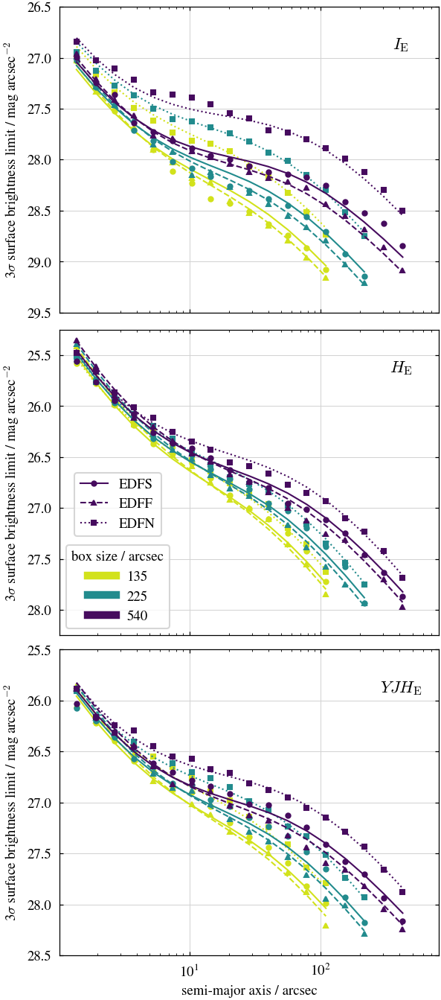
Figure 11
Example of a simulated cluster.
trim = 800
cluster_path = default_data_path("Q1_R1_processed_illustrations/sims/")
fn = cluster_path / "NoSubhaloes_cluster_CE-0_G-760_S23_z0p199_xy.fits"
no_subhaloes = CCDData.read(fn, unit=u.dimensionless_unscaled)
if trim is not None:
no_subhaloes = no_subhaloes[trim:-trim, trim:-trim]
fn = cluster_path / "WithSubhaloes_cluster_CE-0_G-760_S23_z0p199_xy.fits"
with_subhaloes = CCDData.read(fn, unit=u.dimensionless_unscaled)
if trim is not None:
with_subhaloes = with_subhaloes[trim:-trim, trim:-trim]
fn = (
cluster_path
/ "WithSubhaloes_insky_cluster_CE-0_G-760_S23_z0p199_xy_H_withsubhaloes_bkgsub_cropped.fits"
)
insky = CCDData.read(fn, unit=u.dimensionless_unscaled)
if trim is not None:
insky = insky[trim:-trim, trim:-trim]
fn = (
cluster_path
/ "WithSubhaloes_insky_cluster_CE-0_G-760_S23_z0p199_xy_H_mask_cropped.fits"
)
insky_mask = CCDData.read(fn, unit=u.dimensionless_unscaled)
insky_mask = insky_mask[trim:-trim, trim:-trim]
insky_masked = np.where(insky_mask.data, np.nan, insky.data)
sim_profile_fn = default_data_path(
"Q1_R1_processed_illustrations/sims/cluster_CE-0_G-760_S23_z0p199_xy-mask_H-iso_H-phot_H_merged.prof"
)vf = 1
smooth = 33.3 # 33.3 pixels = 10 arcsec
fig, axarr = plt.subplots(1, 3, figsize=(2 * fw, 1 * fw), layout="compressed")
show_cluster_image(no_subhaloes.data, ax=axarr[0], vmin=vmin_h * vf, vmax=vmax_h * vf)
no_subhaloes_smoothed = no_subhaloes.copy()
no_subhaloes_smoothed.data = sampled_median_filter(no_subhaloes.data, size=smooth)
add_contours(axarr[0], no_subhaloes_smoothed.data, label=True)
show_cluster_image(with_subhaloes.data, ax=axarr[1], vmin=vmin_h * vf, vmax=vmax_h * vf)
with_subhaloes_smoothed = with_subhaloes.copy()
with_subhaloes_smoothed.data = sampled_median_filter(with_subhaloes.data, size=smooth)
add_contours(axarr[1], with_subhaloes_smoothed.data, label=False)
show_cluster_image(
insky_masked,
ax=axarr[2],
vmin=vmin_h * vf,
vmax=vmax_h * vf,
interpolate_nans=False,
)
# insky_masked_smoothed = insky_masked.copy()
# insky_masked_smoothed = sampled_median_filter(insky_masked, size=smooth*3)
# add_contours(axarr[2], insky_masked_smoothed, label=False)
xlim = axarr[2].get_xlim()
add_profile_ellipses(axarr[2], sim_profile_fn, 5, 300)
axarr[2].set_xlim(xlim)
add_scalebar(
axarr[0],
length=0.5 * u.arcmin,
wcs=cluster_vis_full.wcs,
xpos=0.75,
ypos=0.12,
ypad=0.02,
text_top="$0.5'$",
text_bottom="100 kpc",
)
add_colorbar(
axarr[0].images[0],
axarr[2],
band=r"$H_\mathrm{E}$",
sb_ticks=[-26, 100, 26, 25, 24],
pad=0.02,
shrink=0.75,
extend="both",
)
for panel, ax in zip(("a", "b", "c"), axarr):
ax.text(
0.07,
0.94,
f"({panel})",
ha="center",
va="center",
color="black",
transform=ax.transAxes,
fontsize="large",
path_effects=[pe.withStroke(linewidth=4, foreground="white"), pe.Normal()],
)
plt.savefig("fig11.pdf")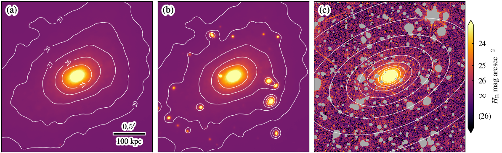